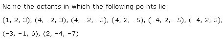
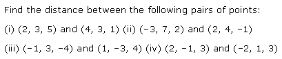
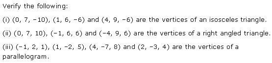
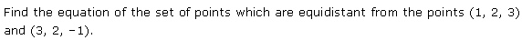
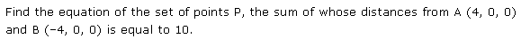
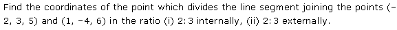
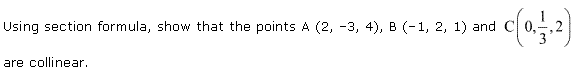

Introduction to Three Dimensional Geometry Class 11 Maths NCERT Solutions are extremely helpful while doing your homework. NCERT Solutions for Class 11 Maths Chapter 12 Introduction to Three Dimensional Geometry All Exercises were prepared by Experienced LearnCBSE.in Teachers.
Free download NCERT Solutions for Class 11 Maths Chapter 12 Introduction to Three Dimensional Geometry Ex 12.1, Ex 12.2, Ex 12.3, and Miscellaneous Exercise PDF in Hindi Medium as well as in English Medium for CBSE, Uttarakhand, Bihar, MP Board, Gujarat Board, BIE, Intermediate and UP Board students, who are using NCERT Books based on updated CBSE Syllabus for the session 2019-20.
- Introduction to Three Dimensional Geometry Class 11 Ex 12.1
- Introduction to Three Dimensional Geometry Class 11 Ex 12.2
- Introduction to Three Dimensional Geometry Class 11 Ex 12.3
- Introduction to Three Dimensional Geometry Class 11 Miscellaneous Exercise
- त्रिविमीय ज्यामिति का परिचय प्रश्नावली 12.1 का हल हिंदी में
- त्रिविमीय ज्यामिति का परिचय प्रश्नावली 12.2 का हल हिंदी में
- त्रिविमीय ज्यामिति का परिचय प्रश्नावली 12.3 का हल हिंदी में
- त्रिविमीय ज्यामिति का परिचय विविध प्रश्नावली का हल हिंदी में
- Introduction to Three Dimensional Geometry Class 11 Notes
- NCERT Exemplar Class 11 Maths Introduction to Three Dimensional Geometry
- Three Dimensional Geometry JEE Main Mathematics Previous Year Questions
NCERT Solutions for Class 11 Maths Chapter 12 Introduction to three Dimensional Geometry
Topics and Sub Topics in Class 11 Maths Chapter 12 Introduction to three Dimensional Geometry:
| Section Name | Topic Name |
| 12 | Introduction to Three Dimensional Geometry |
| 12.1 | Introduction |
| 12.2 | Coordinate Axes and Coordinate Planes in Three Dimensional Space |
| 12.3 | Coordinates of a Point in Space |
| 12.4 | Distance between Two Points |
| 12.5 | Section Formula |
NCERT Solutions for Class 11 Maths Chapter 12 Exercise 12.1
Ex 12.1 Class 11 Maths Question 1:
Ans:

Ex 12.1 Class 11 Maths Question 2:
Ans:

More Resources for CBSE Class 11
- NCERT Solutions
- NCERT Solutions Class 11 Maths
- NCERT Solutions Class 11 Physics
- NCERT Solutions Class 11 Chemistry
- NCERT Solutions Class 11 Biology
- NCERT Solutions Class 11 Hindi
- NCERT Solutions Class 11 English
- NCERT Solutions Class 11 Business Studies
- NCERT Solutions Class 11 Accountancy
- NCERT Solutions Class 11 Psychology
- NCERT Solutions Class 11 Entrepreneurship
- NCERT Solutions Class 11 Indian Economic Development
- NCERT Solutions Class 11 Computer Science
Ex 12.1 Class 11 Maths Question 3:

Ans:

Ex 12.1 Class 11 Maths Question 4:
Ans:

NCERT Solutions for Class 11 Maths Chapter 12 Introduction to Three Dimensional Geometry (त्रिविमीय ज्यामिति का परिचय) Hindi Medium Ex 12.1


NCERT Solutions for Class 11 Maths Chapter 12 Exercise 12.2
Ex 12.2 Class 11 Maths Question 1:

Ans:

Ex 12.2 Class 11 Maths Question 2:
Ans:

Ex 12.2 Class 11 Maths Question 3:

Ans:


Ex 12.2 Class 11 Maths Question 4:

Ans:

Ex 12.2 Class 11 Maths Question 5:

Ans:

NCERT Solutions for Class 11 Maths Chapter 12 Exercise 12.3
Ex 12.3 Class 11 Maths Question 1:

Ans:

Ex 12.3 Class 11 Maths Question 2:
Ans:

Ex 12.3 Class 11 Maths Question 3:
Ans:

Ex 12.3 Class 11 Maths Question 4:

Ans:

Ex 12.3 Class 11 Maths Question 5:
Ans:

Class 11 Maths NCERT Solutions – Miscellaneous Questions
Miscellaneous Exercise Class 11 Maths Question 1:

Ans:

Miscellaneous Exercise Class 11 Maths Question 2:

Ans:

Miscellaneous Exercise Class 11 Maths Question 3:

Ans:
Miscellaneous Exercise Class 11 Maths

Miscellaneous Exercise Class 11 Maths Question 4:

Ans:

Miscellaneous Exercise Class 11 Maths Question 5:

Ans:

Miscellaneous Exercise Class 11 Maths Question 6:

Ans:

Exercise 12.1
For any given point, the sign of its coordinates determines the octant in which it will lie.
Now, from the following table it can be easily determined in which coordinates the point lies.
Q.1: A point is lying on y – axis. What are its ‘x‘ coordinates and ‘z’ coordinates?
Q.2: A point is lying on YZ – plane. What are its ‘x‘ coordinates?
Q.3: In which of the octant the following points lie:
(2, 3, 4), (8, -1, -1), (-4, 9, -8), (-1, -2, -3), (4, -5, 6), (7, -1, -4), (-3, -5, 1), (0, 0, -3)
Q.4: Answer the following questions:
(i). What is the name of a plane determined by the Z-axis and the Y-axis when taken together?
(ii). What is the general form of coordinates of points in the XZ-plane?
(iii). Coordinate plane divides the space into how many octants?
Exercise: 12.2
Q.1: Find the distance between two points whose coordinates are given below:
(i). (2, 8, 9) and (4, 5, 8)
(ii). (-3, 4, 5) and (2, 6, -1)
(iii). (-6, -4, 1) and (5, -2, 6)
(iv). (-1, 9, 8) and (6, 5, -3)
Q.2: Show that the points (7, 0, -1), (-2, 3, 5) and (1, 2, 3) are collinear.
Q.3: Prove the following statements:
(i). (-4, 9, 6), (0, 7, 10) and (-1, 6, 6) are the vertices of a right angled triangle.
(ii). (4, 9, -6), (0, 7, -10) and (1, 6, -6) are the vertices of an isosceles triangle.
(iii). (2, -3, 4), (1, -2, 5), (-1, 2, 1) and (4, -7, 8) are the vertices of a parallelogram.
Q.4: Find the equation of the set of points P which are equidistant from point A (3, 2, 1) and point B (-1, 2, 3).
Q.5: The sum of distance of point P from point A (3, 0, 0) and point B (-3, 0, 0) is equal to 12 units. Find the equation of the set of points.
Exercise 12.3
Q.1: Find the coordinates of the point which divides the line segment joining the points (-2, 1, 0) and (1, 3, 6) internally in the ratio of 1:4 and externally in the ratio of 1:4.
Q.2: Given that the points A (3, 2, -4) B (5, 4, -6) and C (9, 8, -10), are collinear. Find the ratio in which line AC is divided by B.
Q.3: Find the ratio in which XZ – plane divides the line segment AB formed by joining the points (3, -5, 8) and (-2, 4, 7).
Q.4: By using the section formula; Show that the points P (-1, 2, 1), Q (0, 13, 2) and R (2, -3, 4) are collinear.
Q.5: The line segment joining points A (5, 3, -6) and B (9, 15, 7) is trisected by the points P and Q, Find the coordinates of points P and Q.
NCERT Solutions for Class 11 Maths All Chapters
- Chapter 1 Sets
- Chapter 2 Relations and Functions
- Chapter 3 Trigonometric Functions
- Chapter 4 Principle of Mathematical Induction
- Chapter 5 Complex Numbers and Quadratic Equations
- Chapter 6 Linear Inequalities
- Chapter 7 Permutation and Combinations
- Chapter 8 Binomial Theorem
- Chapter 9 Sequences and Series
- Chapter 10 Straight Lines
- Chapter 11 Conic Sections
- Chapter 12 Introduction to Three Dimensional Geometry
- Chapter 13 Limits and Derivatives
- Chapter 14 Mathematical Reasoning
- Chapter 15 Statistics
- Chapter 16 Probability